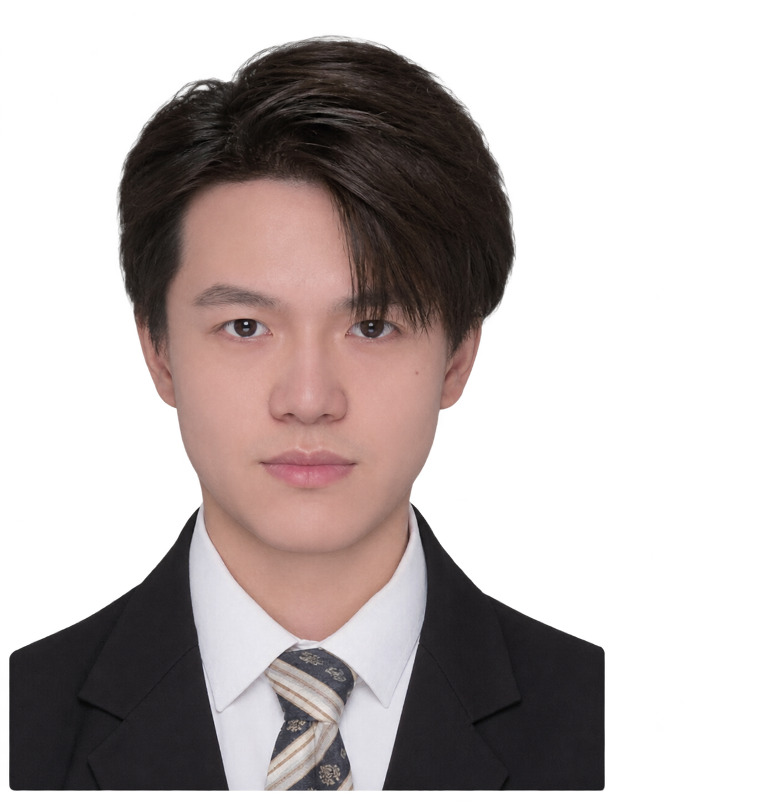

腾讯云雀
AI 视频项目运营实习生
品牌、包装与视觉实验的精选档案。
从概念到图像，探索不同媒介中的表达。

I'm Michael Liu.
A visual & brand designer exploring the space between identities, imagery and AI.
我关注品牌识别、包装与视觉叙事，以清晰的概念组织图像和信息。结合品牌设计与市场设计实践，将 AI 用于创意发散、视觉原型和工作流程探索。
AI 视频项目运营实习生
市场设计实习生
品牌设计实习生
平面设计实习生
视觉艺术与出版设计 · 硕士在读
视觉传达设计 · 本科
Photoshop · Illustrator · After Effects · Cinema 4D · Figma
ChatGPT · Gemini · 即梦 · Claude Code · Codex · Cursor
Let’s make something matter.
让想法成为可见的作品。
Designing design歡
Brand identity · Visual design
Packaging · AI exploration